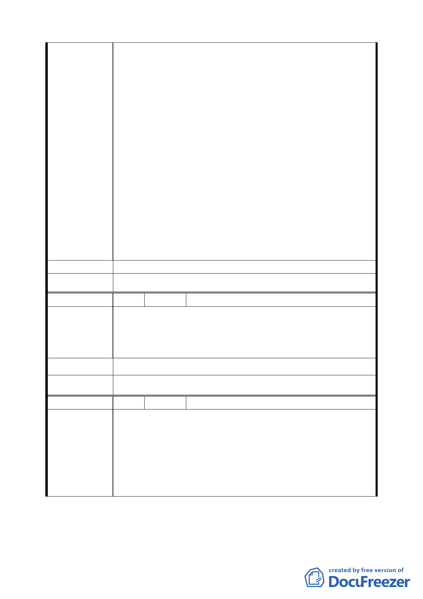

而不應犧牲地主之權益吧！
四、所謂建物補償費用，一般業界認定是指土地開發期間之
租金補償。一般建物的建造期若需約 2－3 年，尚屬合
理，但若改建需 4－6 年以上，其對市民所造成的損失
將會增加，請問此開發案建造需多久時間？為減少市民
損失，若時間過久或是超過預期時間，請問市府可否協
助市民向建商取得這部份的賠償？
五、有關土地增值稅問題，依台北市台北都會區大眾捷運系
統開發所需土地協議價購優惠辦法第五條提及市府取
得之開發後建物價值是不包含獎勵面積價值及土地增
值稅，也就是說，若地主參與且選擇領回土地，當地主
本身取回土地時，不需扣除土地增值費用，對不對？本
人於説明會中曾詢問過捷運局人員（蘇小姐），其表示，
若以地主本身身份取回土地（未移轉他人），則不須扣
除土地增值稅，想確認是否屬實？以免造成不必要的糾
紛。
六、對於以上幾點問題，煩請以書面逐項說明回覆。
建 議 辦 法 （同上）
委 員 會 決 議 同編號 1。
編 號 49 陳情人 李德坊（延平北路三段 17 巷 2 號）
開發案的缺失：
陳
情
理
由
一、權益分配問題住戶吃虧太多。
二、有關開發案欠缺詳細的資料，如建築總樓層及分配之細
節，皆無法讓住戶清楚瞭解。
建 議 辦 法 堅決反對聯合開發。
委 員 會 決 議 同編號 1。
編 號 50 陳情人 張景徵（延平北路三段 17 巷 4 號）
「大橋頭開發案」經歷兩任市長、十二年的時間仍無法成
行，本人有以下幾點提供貴委員會參考：
陳 情 理 由 一、相關單位沒有真正瞭解當地居民的特性。
二、市府團隊沒有詳細的規劃「大橋頭開發案」。
三、市府團隊處理「大橋頭開發案」的態度讓居民無法接受。
一九